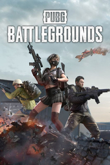

|  | |
| Tiempo de juego | No Jugado |
| Última actividad | Nunca |
| Añadido | 1/29/2025 14:44:06 |
| Modificado | 1/29/2025 14:53:54 |
| Estado de finalización | No Jugado |
| Librería | Playnite |
| Fuente | FREE TO PLAY |
| Plataforma | Microsoft Xbox Series PC (Windows) |
| Fecha de lanzamiento | 12/20/2017 |
| Puntuación de la Comunidad | |
| Puntuación de la Crítica | 82 |
| Puntuación de usuario | |
| Género | Battle royale |
| Desarrollador | PUBG Studios |
| Editor | Krafton Microsoft Studios Tencent Games |
| Característica | Multiplayer |
| Enlaces | Wikipedia Official website MobyGames |
| Tag | [Game Engine] Unreal Engine 4 [People] artist: Jang Tae-seok [People] composer: Tom Salta [People] designer: Brendan Greene [People] director: Brendan Greene [People] director: Jang Tae-seok [People] producer: Kim Chang-han |
PUBG: Battlegrounds (previously known as PlayerUnknown's Battlegrounds) is a 2017 battle royale video game published by Krafton, and developed by Krafton's PUBG Studios. The game, which was inspired by the Japanese film Battle Royale (2000), is based on previous mods created by Brendan "PlayerUnknown" Greene for other games, and expanded into a standalone game under Greene's creative direction. Played from either a third-person or first-person perspective, up to one hundred players parachute onto an island where they are tasked to scavenge for weapons and equipment to kill other players while avoiding getting killed themselves. The available safe area of the game's map decreases in size over time, directing surviving players into an ever-tightening space to force encounters.
PlayerUnknown's Battlegrounds was first released for Windows via Steam's early access beta program in March 2017, with a full release in December 2017; the same month, Microsoft Studios studios released it for the Xbox One via the Xbox Game Preview program, with a full release coming in September 2018. Afterwards the game was ported to the PlayStation 4, Xbox Series X/S and PlayStation 5 consoles, and the Stadia streaming platform, and has also spawned a mobile version, PUBG Mobile, for Android and iOS. The game is continuously developed under the games as a service model and has been free-to-play for all platforms since January 2022.
The game received positive reviews from critics, who found that while the game had some technical flaws, it presented new types of gameplay that could be easily approached by players of any skill level and was highly replayable. The game was credited with popularizing the battle royale genre, with a number of unofficial Chinese clones also being produced following its success. The game received several Game of the Year nominations and set seven Guinness World Records, among many other accolades. PUBG Corporation has run several small tournaments and introduced in-game tools to help with broadcasting the game to spectators, as they wish for it to become a popular esport. It has sold over 75 million copies on personal computers and game consoles, is the best-selling game on PC and on Xbox One, and is the fifth best-selling video game of all time. Until Q3 2022, the game has accumulated $13 billion in worldwide revenue, including from the more successful mobile version of the game, and it is considered to be one of the highest-grossing video games of all time.
PUBG is a player versus player shooter game in which up to one hundred players fight in a battle royale, a type of large-scale last man standing deathmatch where players fight to remain the last alive. Players can choose to enter the match solo, duo, or with a small team of up to four people. The last person or team alive wins the match.
Each match starts with players parachuting from a plane onto one of the eight maps which have different sizes and terrain. The plane's flight path across the map varies with each round, requiring players to quickly determine the best time to eject and parachute to the ground. Players start with no gear beyond customized clothing selections which do not affect gameplay. Once they land, players can search buildings, ghost towns and other sites to find weapons, vehicles, armor, and other equipment. These items are procedurally distributed throughout the map at the start of a match, with certain high-risk zones typically having better equipment. Killed players can be looted to acquire their gear as well. Players can opt to play either from the first-person or third-person perspective, each having their own advantages and disadvantages in combat and situational awareness; though server-specific settings can be used to force all players into one perspective to eliminate some advantages.
Every few minutes, the playable area of the map begins to shrink down towards a random location, with any player caught outside the safe area taking damage incrementally, and eventually being eliminated if the safe zone is not entered in time; in game, the players see the boundary as a shimmering blue wall that contracts over time. This results in a more confined map, in turn increasing the chances of encounters. During the course of the match, random regions of the map are highlighted in red and bombed, posing a threat to players who remain in that area. In both cases, players are warned a few minutes before these events, giving them time to relocate to safety. A plane will fly over various parts of the playable map occasionally at random, or wherever a player uses a flare gun, and drop a loot package, containing items which are typically unobtainable during normal gameplay. These packages emit highly visible red smoke, drawing interested players near it and creating further confrontations. On average, a full round takes no more than 30 minutes.
At the completion of each round, players gain in-game currency based on their performance. The currency is used to purchase crates which contain cosmetic items for character or weapon customization. A rotating "event mode" was added to the game in March 2018. These events change up the normal game rules, such as establishing larger teams or squads, or altering the distribution of weapons and armor across the game map.
The game's concept and design was led by Brendan Greene, better known by his online handle PlayerUnknown, who had previously created the ARMA 2 mod DayZ: Battle Royale, an offshoot of popular mod DayZ, and inspired by the 2000 Japanese film Battle Royale. At the time he created DayZ: Battle Royale, around 2013, Irish-born Greene had been living in Brazil for a few years as a photographer, graphic designer, and web designer, and played video games such as Delta Force: Black Hawk Down and America's Army. The DayZ mod caught his interest, both as a realistic military simulation and its open-ended gameplay, and he started playing around with a custom server, learning programming as he went along. Greene found most multiplayer first-person shooters too repetitive, considering maps small and easy to memorize. He wanted to create something with more random aspects so that players would not know what to expect, creating a high degree of replayability; this was done by creating vastly larger maps that could not be easily memorized, and using random item placement across it. Greene was also inspired by an online competition for DayZ called Survivor GameZ, which featured a number of Twitch and YouTube streamers fighting until only a few were left; as he was not a streamer himself, Greene wanted to create a similar game mode that anyone could play. His initial efforts on this mod were more inspired by The Hunger Games novels, where players would try to vie for stockpiles of weapons at a central location, but he moved away from this partially to give players a better chance at survival by spreading weapons around, and also to avoid copyright issues with the novels. In taking inspiration from the Battle Royale film, Greene had wanted to use square safe areas, but his inexperience in coding led him to use circular safe areas instead, which persisted to Battlegrounds.
When DayZ became its own standalone title, interest in his ARMA 2 version of the Battle Royale mod trailed off, and Greene transitioned development of the mod to ARMA 3. Sony Online Entertainment (now the Daybreak Game Company) had become interested in Greene's work, and brought him on as a consultant to develop on H1Z1, licensing the battle royale idea from him. In February 2016, Sony Online split H1Z1 into two separate games, the survival mode H1Z1: Just Survive, and the battle royale-like H1Z1: King of the Kill, around the same time that Greene's consultation period was over.
Separately, the Seoul-based studio Ginno Games, led by Chang-han Kim and who developed massively multiplayer online games (MMOs) for personal computers, was acquired and renamed Bluehole Ginno Games by Bluehole in January 2015, a major South Korean publisher of MMOs and mobile games. Kim recognized that producing a successful game in South Korea generally meant it would be published globally, and wanted to use his team to create a successful title for personal computers that followed the same model as other mobile games published by Bluehole. He had already been excited about making a type of battle royale game after he had played DayZ, in part that the format had not caught on in Korea. He also wanted to make this through an early access model and have a very limited development schedule to get the game out as quickly as possible, while treating the product as a "games as a service" model to be able to support it for many years. In researching what had been done, he came across Greene's mods and reached out to him. In July 2017, Bluehole partnered with social media platform Facebook to provide exclusive streaming content to Facebook's gaming channels, as part of their push to provide more gaming content for its users.
Around the same time that Greene left Sony Online, Kim contacted and offered him the opportunity to work on a new battle royale concept. Within a week, Greene flew out to Bluehole's headquarters in Korea to discuss the options, and a few weeks later, he became the creative director of Bluehole. He moved to South Korea to oversee development. According to Greene, this was the first time a Korean game studio had brought aboard a foreigner for a creative director role, and while it was a risk, he says that his relationship with Bluehole's management is strong, allowing Greene's team to work autonomously with minimal oversight. The game's main musical theme was composed by Tom Salta, who was personally selected by Greene as he and the team were looking for an "orchestral electronic hybrid theme" that would give players a "huge build-up", keeping them "resolutely determined" until a match starts. The music for 6th anniversary was composed by Antti Martikainen.
Development began in early 2016 and was publicly announced that June, with plans to have the game ready within a year. Kim served as executive producer for the game. Bluehole started with a team of about 35 developers supporting Greene's work, but had expanded to 70 by June 2017. Greene stated that many of these developers were voluntarily putting in longer work hours into the game due to their dedication to the project, and not by any mandate from himself or Bluehole's management. In addition to Bluehole, Greene also credits Bohemia Interactive, the developers of ARMA and DayZ, for support with motion capture animations via their Prague studio.
With the rapid growth of interest in the game, Bluehole spun out the entire development for PUBG into Bluehole Ginno Games in September 2017, which was renamed PUBG Corporation with Kim as its chief executive officer. PUBG Corporation continued the development of the game and its marketing and growth, opening an office in the United States with plans for future ones in Europe and Japan. In August 2018, PUBG Corporation launched the "Fix PUBG" campaign, acknowledging that the game by then still had several lingering bugs and other performance issues. The campaign finished in November, with PUBG Corporation calling it a success as everything listed had been implemented by then.
In March 2019, Greene announced that he was stepping down as the game's lead designer, but would still serve as a creative consultant. Tae-seok Jang, the game's art director, would replace him, with Green relocating to PUBG's studio in Amsterdam, PUBG Special Projects. Greene stated that he believed the main PUBG team was at a place to continue developing the game in the direction he had set to keep the game unique among the other battle royale games it had launched, and he wanted to try something not tied to battle royale but still multiplayer-based. The move also put him closer to his family in Ireland.
With the success of PUBG, Bluehole created Krafton as a holding company for its video game assets and studios in 2018, taking over the publishing duties for PUBG and related games. By December 2020, Krafton merged PUBG Corporation into their internal studio system, rebranding the team as PUBG Studios.
PUBG represents the standalone version of what Greene believes is the "final version" of the battle royale concept, incorporating the elements he had designed in previous iterations. Faster development was possible with the game engine Unreal Engine 4, compared with ARMA and H1Z1, which were built with proprietary game engines. Greene acknowledged that implementing the size of the maps in PUBG has been one of the challenges with working with Unreal, which was not designed with such maps in mind. The game was designed as a mix between the realistic simulation of ARMA 3 and the arcade-like action focus and player accessibility of H1Z1. To prevent in-game cheating, the game uses BattlEye anti-cheating software, which had permanently banned over 13 million players by October 2018. BattlEye indicated that 99% of all cheating software for the game was developed in China.
Based on Greene's experience with the genre, an island with many terrain features was picked as the first map, known as "Erangel". The map design scope was to offer players many possible options for strategic and unique gameplay. Some buildings and structures were designed to depict the style of the brutalist architecture of the Soviet Union during the 1950s. The developer team playtested architecture features and random item placement systems, looking at both how close-quarters encounters went and open terrain areas. The goal was to optimize the right distribution and placement of weapons and gear across the map, to encourage players to make strategic decisions about how to proceed in the game without overly penalizing players who may not find weapons within the first few minutes of a round. During early access, additional maps were planned, such as one set on a fictional island in the Adriatic Sea that included snow-covered Yugoslavian territories. Greene stated that he thought the Erangel map felt disjointed despite meeting their goals for gameplay, and sought to create more unified ideas with future maps.
The freefall from an airplane at the start of each match was a new feature for the genre, encouraging strategy between staying with the pack of players or seeking out one's own route for a better chance at finding good loot. With the added parachute drop, Greene considered that PUBG had three distinct subgames: the airdrop during which one must quickly figure out the best time to jump and where to land in relationship to the other players, the loot game of knowing where and how to gather the best possible equipment, and the combat game with other players. Winners of a match are greeted with the phrase "winner winner chicken dinner", an idiom that Greene had used in his prior battle royale games and kept in PUBG, which itself had origins as early as the Great Depression era.
Greene also introduced microtransactions that allow players to use real-world funds to purchase loot crates that provide randomly-selected cosmetic items, also known as "skins", which they can trade with other players; while Greene recognizes the issue with skin gambling, he believes that Valve has put safeguards in place to support a "skin economy" that will provide further revenue for them without concerns over gambling. However, by November 2017, gray market skin gambling sites began to appear that used PUBG cosmetics as virtual currency. Following controversy over the use of loot boxes to offer "pay-to-win" items in other games in November 2017, the PUBG Corporation affirmed that while they would continue to add new cosmetic items rewarded by in-game crate purchases, they would never add anything that affects or alters gameplay. In May 2018, PUBG Corporation disabled the ability to trade skins on the Steam Marketplace as they found that players were still abusing the system by selling them for monetary value through unofficial third-party platforms. While still in early access, Bluehole offered an early preview of the system by offering time-limited crates that could be purchased during the first PUBG Invitations tournament during Gamescom in August 2017, with the sales from these contributing to the prize pool. Among loot from these crates were special outfits inspired by the original Battle Royale film. Greene anticipates adding a campaign mode with co-operative player support, though there would be "no serious lore" crafted for the narrative, comparing this to similar modes in Watch Dogs.
The game also features custom gamemodes and modding support. He considered modding support an essential part of the full release as, just as he had his start with mods, he wants to enable others to create variations on his game so that he could "find the next PlayerUnknown". This was aided by a quiet release of custom server support to a number of influential streamers which subsequently made it into public release. In one case, "Zombie Mode", all but four players pretend to be zombies, who may sometimes distinguish themselves by removing all clothing and are limited only to collecting melee weapons and consumable items, and must rush to attack the other four players, who are able to collect all gear and attempt to outrun and defeat the zombies. Inspired by this mode, Greene announced plans to introduce an official zombie-based gameplay mode based on this into PUBG. Whereas most of the rest of the team continued to develop the core gameplay and maps, Greene is taking on the zombie mode as a near solo project, only using the assistance of the lead animator to help with the zombie animations. Greene sees PUBG as a platform, and would like to see more custom game types and mods developed by players for it. Greene identified that some mods that he also previously worked on from ARMA 3 may become part of the Battlegrounds platform. Greene also wants to incorporate streaming services like Twitch into the game that would enable features supporting Battlegrounds' development as an esport, calling this an "ultimate end goal" for his development, but he wanted to let it progress naturally with players.
Bluehole used closed alpha and beta periods with about 80,000 players to gauge initial reaction to the gameplay and adjust balance prior to a wider release. Just prior to the early access phase on Steam, Bluehole opened a few servers and invited some popular live streamers of similar games to try it out as to start gaining interest. Early access for the Windows version launched on March 23, 2017. This period was planned to last approximately six months, originally aiming for a September 2017 release. In July 2017, Greene announced that they would need to extend the early access period by a few months, continuing to release updates on a regular basis, with plans to still release by the end of 2017, as committing to this original period "could hinder us from delivering a fully featured game and/or lead to disappointment within the community if the launch deadline is not met". Initially, Bluehole had expected that they would just gain enough players through early access to smooth out the gameplay, and only when the game was completed, they would have started more marketing for the title. The sudden interest in the game from early access exceeded their expectations, and put emphasis on the stability of the game and its underlying networking alongside gameplay improvements. Through August 2017, these updates generally included a major weekly patch alongside major monthly updates that provided key performance improvements. However, from August onward, Bluehole backed off the rate of such patches, as the high frequency has led to some quality control issues, and the developers rather make sure each patch content is well-vetted by the community before providing new updates; this did not change their plans for a 2017 release, where it fully released out of early access on December 20.
In part of the game's success in early access, Tencent Games, the largest publisher of video games in China, approached Bluehole that same month with an offer to publish PUBG in China. However, the China Audio-Video and Digital Publishing Association issued a statement in October 2017 that discouraged battle royale-style games, stating that they are too violent and deviate from Chinese values of socialism, deeming it harmful to young consumers. The following month however, PUBG had reached a formal agreement with the Chinese government to allow the release of the game in the country, with Tencent as the publishing partner. However, some changes were made to make sure it aligned with socialist values and traditional Chinese morals. In South Korea, the game is marketed and distributed by Kakao Games.
Despite the lack of a Chinese publisher prior to the Tencent deal, players in China had found ways to acquire and play the game through Steam via proxies and other networking tricks. To address it, PUBG Corporation planned to add maximum client ping limits for servers which can reduce the issues with latency problems and prevent some of the cheating that has occurred. This would not prevent cross-region matchmaking but may make it difficult for some players to play outside their region if they have a poor Internet infrastructure. Tencent has also helped by identifying and reporting around 30 software programs to Chinese police that can be used to cheat in PUBG, leading to over a hundred arrests by the beginning of 2018. Separately, this technical issue, in addition to the larger number of Chinese players, has created complaints in the player community. Some Western players fear that many Chinese players are able to cheat in the game by exploiting some of the network latency issues, something that PUBG Corporation continued to address as the game shifted out of early access. However, a small number of players called for server segregation by region and had used racial insults at Chinese players they encountered in game. Greene was disappointed with this "xenophobic attitude", calling it "disgraceful", and asked the player community to respect the Chinese players more as their numbers were a key part of the game's success. Greene also identified that players can easily get around such region locks using virtual private networks, making this approach ineffective. PUBG Corporation eventually added region-based matchmaking by October 2018, though players still reported issues with connectivity and slow matchmaking.
PUBG Lite was a free version of PUBG that was meant to be better playable on low-end computers by having significant reductions in graphic details and other features, but is otherwise feature complete with the full game. The version was meant to be played in regions where the game's minimum specifications may be difficult for average players to achieve, with a beta launch first releasing in Thailand in January 2019, and in Europe that October. PUBG Lite was shut down on April 29, 2021.
On January 12, 2022, the game became free to play. A new account tier, called Battleground Plus, was made available for purchase that includes additional customization items and in-game experience boosts. Owners of the game who purchased prior to January 12 were automatically upgraded to Battleground Plus for free. Battleground Plus allows for playing in ranked mode and on custom servers and includes additional customization items and in-game experience boosts.
Greene was part of Microsoft's press conference during E3 2017 to announce that PUBG would be coming to Xbox One as a timed console exclusive sometime by the end of 2017, using the Xbox Game Preview early access approach to test it.
Initially, Greene said that Microsoft was not directly involved in the porting but only providing assistance to make sure the port is good, and that most of the porting responsibilities are being done by Anticto, a Spanish developer. However, at Gamescom that year, Bluehole affirmed that Microsoft Studios would be publishing the Xbox One version of the title, helping to make a planned 2017 release for this version. Greene said that Microsoft's support has helped in several ways, not only for the Xbox One version but improving the performance and security of the Windows version. Further, by being part of the group of studios under the Microsoft banner, they have been able to talk and incorporate technology from other developers, such as improved water rendering techniques they obtained from Rare that they had developed for Sea of Thieves. Microsoft considered PUBG to be an important project to demonstrate their company's ability to be more than just a publisher, according to Microsoft's Nico Bihary who lead the project. Bihary said they have given PUBG a "white glove" treatment, and for the Xbox One port, they have provided services from their advanced technology group and time and support from The Coalition, another of Microsoft Studios' subsidiaries. Kim also stated that the team was interested in cross-platform play between the Windows and console versions, but did not anticipate this as a release feature, as they need to determine how to mitigate the advantage keyboard and mouse-using players would have over those using controllers.
Titled "Game Preview Edition", the early access version for the Xbox One was released on December 12, 2017, in both digital and physical formats. To promote it, Microsoft performed real-life supply crate drops in Australia in the week prior, with the crates containing Xbox hardware, Battlegrounds merchandise, and other goods, using passcodes published alongside the drop locations on social media. The Xbox version also includes Xbox-specific in-game cosmetic items, some of which could be purchased directly rather than through in-game crates. The official release out of the Game Preview program occurred on September 4, 2018. Xbox Series X/S version and PlayStation 5 version releases were announced via a post on the office website. The game launched on November 10, 2020, in Xbox Series X/S. PUBG Corporation confirmed the Xbox Series X version will feature a consistent 60 FPS gameplay while the Xbox Series S version features a 30 FPS gameplay, however they've also claimed the framerate cap will be raised in the near future. The game also features account transition and cross-platform play.
With the announcement of the Xbox release, PUBG Corporation stated that there were plans to port to additional platforms, such as the PlayStation 4. In an interview shortly after Gamescom, Greene said that their deal with Microsoft did not exclude a PlayStation 4 port, but that their focus at the time was only on the Windows and Xbox One version, given the small size of their team. When asked about it in January 2018, Kim stated that the team released the game first on the Steam and Xbox Game Preview early access programs as they both easily allowed in-development games to be released and updated over time, which contrasted with Sony's lack of their own early access program, as well as their strict quality control for even completed games. The PlayStation port was officially announced in November, and was released on December 7, 2018. PUBG Corporation studio head Brian Corrigan said that while they had a small team working on the PlayStation 4 port for some time, it was only until the Xbox One port was mostly completed that they began fully working on the PlayStation port. The PlayStation 4 version of the game includes platform-exclusive customization items, specifically the outfit of Nathan Drake from the Uncharted series, and Ellie's backpack from The Last of Us. A short live-action film to promote the PlayStation 4 release was directed by Jordan Vogt-Roberts and starred Jason Mitchell. The PlayStation 5 version of the game was released along with the PlayStation 5 console on November 12, 2020. The publisher claimed those who purchased the game on PlayStation 4 will be able to freely upgrade and download the game, and players could experience a consistent 60 FPS gameplay, account transition and support for cross-platform play.
Cross-platform play support between the Xbox and PlayStation versions of PUBG was added in October 2019 following a testing period during the prior month.
PlayerUnknown's Battlegrounds – Pioneer Edition was released on the streaming service Stadia on April 28, 2020. The game was free for Stadia's paid subscribers on launch.
Following the Chinese publication deal for the Windows version, Tencent Games and PUBG Corporation additionally announced that they were planning on releasing two mobile versions based on the game in the country. The first, PUBG: Exhilarating Battlefield, is an abridged version of the original game, and was developed by LightSpeed & Quantum Studio, an internal division of Tencent Games. The second, PUBG: Army Attack, includes more arcade-style elements, including action taking place on warships, and was developed by Tencent's TiMi Studio. Both versions are free-to-play, and were released for Android and iOS devices on February 9, 2018. The games had a combined total of 75 million pre-registrations, and ranked first and second on the Chinese iOS download charts at launch. Following a soft launch in Canada, an English version of Exhilarating Battlefield, localized simply as PUBG Mobile, was released worldwide on March 19, 2018. Following its release, a Korean and Japanese oriented version of the game released in June 2018, under the title name PUBG Mobile KR. A Vietnamese version, PUBG Mobile VN released in January 2019.
In China, PUBG Mobile had been awaiting approval by the government for an authorized release, during which the game could only be offered as a public test. However, Tencent's planned release was suspended due to the government approval freeze across most of 2018. By May 2019, Tencent announced it would no longer seek to publish PUBG Mobile in China, but instead would re-release the game under the title Game for Peace that readily meets China's content restrictions, such as eliminating blood and gore. Taiwanese version of the game was released following the Chinese version, as PUBG Mobile TW. A version meant for lower-end mobile devices which features a smaller map made for 60 players, PUBG Mobile Lite, was released on July 25, 2019. This had support for high FPS gameplay on multiple Android devices. The Chinese version of the app was again renamed to Peacekeeper Elite in 2020.
Support for 90 FPS gameplay was added for selected OnePlus devices in August 2020.
On May 6, 2021, Krafton announced the relaunch of the game in India, following the ban imposed by the Government of India. Krafton directly published the game instead of Tencent as a newly named title which could only be accessed by users in India as Battlegrounds Mobile India.
To celebrate the game surpassing two million copies sold, Bluehole announced a 2017 Charity Invitational event, inviting 128 players to compete over their official Twitch channel to raise money for the Gamers Outreach Foundation, with Bluehole matching all donations up to US$100,000. The competition ran in early May 2017, and raised at least US$120,000 from viewers along with Bluehole's US$100,000 match, and served as a prototype for future esports events for the game. During the August 2017 Gamescom event, Bluehole and ESL organized the first PUBG invitational tournament, with a $350,000 prize pool. Separate events were held for solo players, two-player teams, two-player teams fixed to first-person perspective, and four-player squads. Each event featured three matches, with the player or team scoring the highest across all three named winners.
Greene said that while he had envisioned the battle royale format to be a spectator sport since his ARMA II mod, their approach to making PUBG an esport would be a matter of taking "baby steps". Greene said that they would not actively pursue esports until after the game was fully released and that all major bugs were eliminated. The Gamescom 2017 event demonstrated the issues surrounding the logistics of running a large PUBG tournament with a large number of players involved, and they had worked alongside ESL to explore how to do this effectively in the future. Further, Greene stated there was also the need to establish a format for presenting a PUBG match to make it interesting to spectators, which he thought would take some time to develop given the nature of the emergent gameplay, comparing it to established first-person shooters and multiplayer online battle arena esport games. A 20-team, 80-player tournament with a US$200,000 prize pool was organized by Intel in Oakland in November 2017.
Krafton had looked to expand PUBG beyond the core game as to expand the narrative universe. As part of this, PlayerUnknown's Battlegrounds was quietly rebranded as PUBG: Battlegrounds around July 2021.
Starting in 2020, Krafton released a series of live-action documentaries starring Jonathan Frakes that explored the origins of the game's Battlegrounds. Ahead of the game's Taego expansion in July 2021, Krafton released another live-action short called "Ground Zero", featuring Ma Dong-seok (aka Don Lee).
Krafton announced a partnership with Adi Shankar in July 2021 to develop an animated series based on the PUBG universe.
In 2019, Krafton created a new studio Striking Distance, helmed by Glen Schofield, who previously led development on the Dead Space series. In 2020, Schofield revealed that the studio was working on The Callisto Protocol, a game set in the PUBG universe but in the far future, taking place on a prison colony established on Jupiter's moon Callisto.
Krafton announced a new game in development named PUBG: New State. This particular game is separated from PUBG: Battlegrounds but taking place in the PUBG Universe. Pre-registrations were opened for the game on February 25, 2021. It was released on 11 November that year for iOS and Android. The game takes place in the year 2051 and is based on future warfare. On January 27, 2022, the title name changed from "PUBG: New State" to "New State Mobile".
Battlegrounds received "generally favorable reviews" on all platforms, with the exception of the PlayStation 4 version which received "mixed or average reviews", according to review aggregator website Metacritic. During both its early access phase and after, the game also surpassed numerous player-count records. Bluehole released statistics for the first four months of release that showed that over ten million rounds of Battlegrounds had been played, effectively equal to more than 25,000 man-years of time. Data by SteamSpy showed that Battlegrounds had surpassed long-standing popular titles in concurrent player count on Steam, such as Fallout 4 and Grand Theft Auto V, eventually overtaking Dota 2, the most played game on the platform for years, in August 2017. The following month, the game had its peak concurrent player count reach over 1.3 million, surpassing Dota 2's all-time record of 1.29 set in March 2016. The game then reached a concurrent player count of two million in October 2017, and three million by the end of the year. The game has also been shown popular in South Korean PC bangs; analysis firm Gametrics reported that Battlegrounds had surpassed Overwatch and became the second-most played game in the country by August 2017, only behind League of Legends, it subsequently surpassed League of Legends by October 2017. Battlegrounds' popularity in China led to a large increase in users of Steam from there, with more than half of Steam clients having Chinese as their default language in late 2017.
Several journalists commented on the game's rapid growth towards a large player base for a game that was still in early access. Greene had confidence that the game could reach over a million players within a month, but some of his development team were only anticipating around 200,000 to 300,000 within the first year, and were surprised by its performance in its first month. Greene himself believed that the strong growth was buoyed by non-traditional promotional channels like Twitch streamers and other content creators, which they have since worked to introduce new gameplay elements ahead of public release. IGN's Rad believed that the popularity of the game was due to its fast-paced nature compared to similar type games available at the time, such as H1Z1 and DayZ. She thought that the design balanced the solitary periods when the player is scavenging or sneaking around with those of being in combat with others, and the approach is readily accessible to new players with very little waiting time to get into a new match. Andy Moore for Glixel considered that Battlegrounds' popularity comes from how the game encouraged players to engage due to the situation they are placed in rather than from the player's own disposition, comparing it to the Stanford prison experiment, and thus the game is able to capture the interest of players who may normally eschew these types of games.
Rock Paper Shotgun's Michael Johnson described Battlegrounds as "a tactical shooting sandbox, a story generator, and a horror game all in one", providing some of the "highest highs" in multiplayer gaming as reason for its popularity. Rob Zacny for Waypoint found that Battlegrounds offered the same type of entertainment experience for viewers that many other player-vs-player survival games have, but because of the lack of persistence, players were more likely to experiment with resources rather than hoard them, leading to humorous or unexpected situations that are often absent in survival games and making the title more enjoyable to watch and play, leading to its popularity. Jeff Grubb of Venture Beat considered Battlegrounds a paradigm shift in the first-person shooter market similar to how Call of Duty 4: Modern Warfare also changed the landscape of shooters when it was released in 2007, and believed it did this by being an anti-Call of Duty in terms of pacing and strategy. IGN's Chloi Rad has praised the game's gunplay, saying the game "has taken the military-sim gameplay... [and] boiled it down to its most exciting parts."
Battlegrounds made US$11 million in the first three days of its Windows early access release in March 2017. By the second week of April, the game had sold over one million copies, with a peak player count of 89,000, SuperData Research estimated that the game's April sales exceeded US$34 million, putting it as one of the top 10 highest grossing revenue games for the month and exceeding revenue from Overwatch and Counter-Strike: Global Offensive. By May 2017, the game had sold over two million copies, with total gross revenues estimated at US$60 million. Within three months of its early access release, it had surpassed over five million copies sold, and Bluehole announced it had exceeded US$100 million in sale revenue. Battlegrounds reached this four million mark faster than Minecraft, which took over a year to reach similar sales figures while it was in its paid-beta development period.
By September 2017, Bluehole's value, as tracked by a firm that tracks private Korean corporations, increased five-fold from June of that year to US$4.6 billion, primarily due to Battlegrounds. By December 2017, PUBG Corporation reported that there were more than 30 million players worldwide between the Windows and Xbox versions. The research firm SuperData estimated that Battlegrounds drew in more than US$712 million in revenue within 2017. By February 2018, the game had sold over thirty million on Steam according to Steam Spy. The following month, Steam's President Gabe Newell stated that the game was the third highest-grossing game of all time on the platform. PUBG: Battlegrounds is the best-selling video game on PC and on Xbox One. Before the release of the PlayStation 4 version, 42 million copies were sold on PC and 9 million copies on Xbox One.
Within three days of going live on the Xbox Live Preview Program in mid-December 2017, Microsoft announced that Battlegrounds had sold more than a million copies on the platform. Alongside this, Microsoft announced that Battlegrounds would be offered as a free add-on for those buying the Xbox One X console through the end of 2017. A month after release, the Xbox version had sold more than four million copies and was the fourth bestselling game in the United States, according to The NPD Group. By March 2018, the game had sold forty million copies across all platforms, which had risen to over fifty million by June, averaging over 87 million players daily with over 400 million players in total. The mobile version had over 100 million downloads by August 2018, and exceeded 225 million by October 2018, a figure higher than the combined player base for Fortnite at nearly the same point in time. In 2018, the bulk of these players were in Asian countries such as China and India, where PUBG Mobile was released before Fortnite and could run on lower-powered mobile hardware. China was the game's largest player base. PUBG was the most popular online game in India in 2018 (but it was banned by the government of India in 2020; see below).
PUBG was the top-selling PC paid game of 2017, having sold 30 million copies worldwide and grossed about $900 million. By June 2018, it had sold more than 50 million copies worldwide. PUBG was again the top-selling PC paid game of 2018, increasing its annual sales revenue to $1.028 billion. In addition, the free-to-play PUBG Mobile became the first mobile battle royale game to gross over $1 billion, reaching over $1.5 billion as of 2019.
PUBG Mobile was the second most-downloaded mobile game of 2018, with nearly 300 million downloads worldwide. The game's largest market was China, which accounted for 29% of the game's downloads, followed by India and the United States each with about 10% (30 million) of its downloads. It was the most-installed battle royale game of 2018, with about 200 million more installs than Fortnite, which received 82 million installs on mobile devices. In 2019, PUBG Mobile reached 555 million downloads worldwide, with India accounting for 116 million (21%) of the downloads, China 108 million (19%), and the United States 42 million (8%).
In Japan, PUBG was the most popular PC game during 2017. PUBG Mobile grossed ¥3.58 billion ($32.42 million) in Japan during 2018. In January 2019, the PlayStation 4 version of Battlegrounds sold 7,447 copies within its first week in Japan, which placed it at number 14 on the all-format sales chart. By December 2019, the PC and console versions of the game had sold over 60 million copies, in addition to PUBG Mobile having exceeded 600 million downloads. By July 2020, computer and console software sales had exceeded 70 million units sold, in addition to PUBG Mobile accumulating 734 million downloads. PUBG Mobile had grossed over $3.5 billion in revenue by August 2020. PUBG Mobile grossed over $2.6 billion in 2020, making it the highest-grossing game of the year and bringing its total revenue to over $4.3 billion by December 2020.
In March 2021, it was reported that PUBG Mobile had accumulated 1 billion downloads outside of China since launch. By December 2022, PUBG Mobile has grossed $9 billion worldwide, while Battlegrounds Mobile India surpassed 100 million downloads from the Google Play store. By the end of 2021, PUBG: Battlegrounds had an average of 70 million daily users. After selling more than 75 million copies, the original PC and console game converted to free-to-play, and according to Krafton's revenue report for the first quarter of 2022, the free-to-play transition was the reason for the increase in the game's profits. PC sales had increased by 61 percent for a revenue of $82.3 million. In gaming consoles, sales revenue increased by 274 percent over the last year, and monthly active users also increased by almost 300 percent. The PC and console versions of the game have a total revenue of $4 billion since the game's release in 2017. Combined with the mobile version, which generated $9 billion in revenue until Q3 2022, PUBG: Battlegrounds has a total revenue of $13 billion.
Before the official release of PUBG: Battlegrounds, as an early access video game, it had collected seven Guinness World Records on Steam. Starting with the first record, title "Fastest time for a Steam Early Access video game to sell one million units" was provided for being able to sell 1 million units in just 16 days of its early access release. Title "Fastest time for a Steam Early Access video game to gross $100 million in revenue" was provided for being able to gross $100 million in just 79 days of its early access release. Title "First non-Valve video game to be the most played game on Steam" was provided for being able to temporarily top the Steam charts for people playing the game at the same time – more than 800,000. It was the first time that a game not published by Valve, the makers of Steam, had achieved this since Steam's initial release in 2003. As of 6 September 2017, it had the second highest ever peak players on the Steam distribution platform. Titles "Most concurrent players for a Steam Early Access video game", "Most concurrent players on Steam for a non-Valve video game" and "Most actively played video game on Steam" were provided for being able to achieve 1,984,278 concurrent players on Steam. Title "First video game with 2 million concurrent players on Steam" was provided for being able to achieve a peak of 2,279,084 gamers playing at the same time.
While still in early access, Battlegrounds won the "Best Multiplayer Game" and was also nominated for the categories "Game of the Year" and "Best Ongoing Game" at The Game Awards 2017. The game's nomination for "Game of the Year" created some debate, being the first early access title to be named for one of the top industry awards. Also, about a month before it was released, the game won "Best Multiplayer Game" and "PC Game of the Year" at the 35th Golden Joystick Awards, whereas its other nominations were for "Studio of the Year" (PUBG Corporation) and "Ultimate Game of the Year". It also won the "Breakout Game of the Year" award at PC Gamer's end of the year awards, whereas its other nomination was for "Game of the Year". Polygon ranked the game second on their list of the 50 best games of 2017, and The Verge named it one of their 15 Best Games of 2017, while Entertainment Weekly ranked it seventh on their "Best Games of 2017" list.
Following release, Battlegrounds has been nominated and won several industry awards, including winning Best Multiplayer Game at the 35th Golden Joystick Awards and The Game Awards 2017, as well as Action Game of the Year during the 21st Annual D.I.C.E. Awards.
The game has also gained multiple awards from individual press. Battlegrounds won the award for "Best PC Game", "Best Multiplayer", and "Best Spectator Game" at the IGN Best of 2017 Awards, whereas its other nominations were for "Game of the Year" and "Best Shooter". It also won the award for "Best PC Game" at Destructoid's Game of the Year Awards 2017. The game also won Giant Bomb's "Best Multiplayer", "Best Surprise", "Best Debut", and "Game of the Year" awards, and was classified as a runner-up for the "Best Moment or Sequence" award for the "chicken-eating game". Eurogamer ranked PUBG fourth on their list of the "Top 50 Games of 2017", while GamesRadar+ ranked it 12th on their list of the 25 Best Games of 2017. Game Informer gave it the award each for "Best Competitive Multiplayer" and "Best Shooter" in their Best of 2017 Awards, and also for "Best Competitive Multiplayer", "Best Multiplayer Map" (Erangel), "Best Innovation", and "Shooter of the Year" in their 2017 Shooter of the Year Awards. In their Reader's Choice Best of 2017 Awards, the game won the "Best Competitive Multiplayer" award, and was runner-up in the "Best Microsoft Exclusive" and "Best Shooter" categories.
Battlegrounds is considered as one of the games that have boosted the popularity of the battle royale game genre, even though other games, including Greene's previous mods, were already on the market. After its large early access sales numbers, other games followed with battle royale mechanics, with either existing games that added a battle royale mode or fully new games. Notably, Epic Games updated their in-development title Fortnite, a sandbox-based survival game that included the ability to construct fortifications, to include a battle royale mode that retained the fortification aspects. Known as Fortnite Battle Royale, Epic later released it as a standalone free-to-play game in September 2017. Shortly after its release, Bluehole expressed concerns about the game, acknowledging that while they cannot claim ownership of the battle royale genre, they feared that since they had been working with Epic for technical support of the Unreal engine, they may have had a heads-up on planned features they wanted to bring to Battlegrounds and could release it first. PUBG Corporation later filed a lawsuit against Epic Games Korea in January 2018, alleging that Fortnite Battle Royale was infringing the copyright of Battlegrounds. However, the lawsuit was closed by PUBG in June 2018 for undisclosed reasons.
Greene had expressed concern on the large number of games that have simply cloned the Battlegrounds mechanics, particularly in China where clones of Battlegrounds are considered a new genre of "chicken-eating game" (based on the "winner winner chicken dinner" line to a match winner in Battlegrounds). Greene said "I want this genre of games to grow. For that to happen you need new and interesting spins on the game mode. If it's just copycats down the line, then the genre doesn't grow and people get bored." Greene claimed no ownership of the battle royale or last man standing genres, but believed that the clones were taking some specific mechanics he had developed in Battlegrounds and prior mods, such as the initial parachuting segment or the red-zone bombing runs, and would like to see legislation to give developers like himself protection against these types of concepts as well as improve creativity as developers invent new approaches to mimic such innovations. Battlegrounds' explosive growth and how it popularized the battle royale genre was considered one of the top stories in the video game industry during 2017.
Prior to release of their mobile versions, PUBG Corporation initiated legal action in the Northern District Court of California against Chinese game publisher NetEase in January 2018, claiming that their mobile games Rules of Survival and Knives Out infringe on Battlegrounds' copyrights. PUBG's lawsuit asserts that Rules of Survival is "a copyrightable audio-visual work, individually and/or in combination with other elements of Battlegrounds", and identified several elements that appear similar in both games. While some of these elements are common features of a battle royale game, PUBG asserted that other elements referencing specific facets of Battlegrounds, such as references to chicken for winning a game or using cookware as weapons or armor, imply a connection to Battlegrounds. PUBG seeks both monetary damages and an injunction to prevent NetEase from further distribution of the games. NetEase, in responding to PUBG's request to Apple to remove the games, denied that their games violated Battlegrounds' copyrights. By March 2019, the two companies had reached an undisclosed agreement and were working to get the cases dismissed.
In March 2019, Battlegrounds was banned in the Indian state of Gujarat after the local government decided the game was too addictive and an unnecessary distraction during exam season. A number of students caught playing the game were arrested as a result. The ban was not renewed in some cities in the state after March as exam season had ended. A similar ban was enacted in Nepal and Iraq in April 2019, with the cited reasons being that the game was harmful to children and teenagers. The ban in Nepal was shortly lifted by the country's Supreme Court, stating that the government could not enforce such a ban that interfered with personal freedoms without demonstrating why the ban was necessary. In mid-2019, Jordan and the Indonesian province of Aceh issued similar bans.
On July 1, 2020, Battlegrounds was banned in Pakistan by Pakistan Telecommunication Authority, citing the reasons that the game is addictive, a wastage of time and poses a serious negative impact on the physical and psychological health of children, after receiving various complaints from different segments of society and Lahore High Court's directions to look in the matter. However, the ban was temporary till further orders from the court. The game continued to remain banned in Pakistan for a month. A meeting was held on July 30, 2020, between PTA and legal representatives of Proxima Beta, who addressed the queries raised by the authority and emphasized on continued engagement and a comprehensive control mechanism. After this, the ban on Battlegrounds was lifted.
Amidst the ongoing 2020 China–India skirmishes, the Indian government banned PUBG Mobile along with more than 100 other Chinese apps, most made by Tencent and NetEase, on September 2, 2020, asserting the apps were "stealing and surreptitiously transmitting user data in an unauthorized manner to servers which have locations outside India". India was PUBG Mobile's largest market with the country accounting for 175 million downloads and 24% of global users.